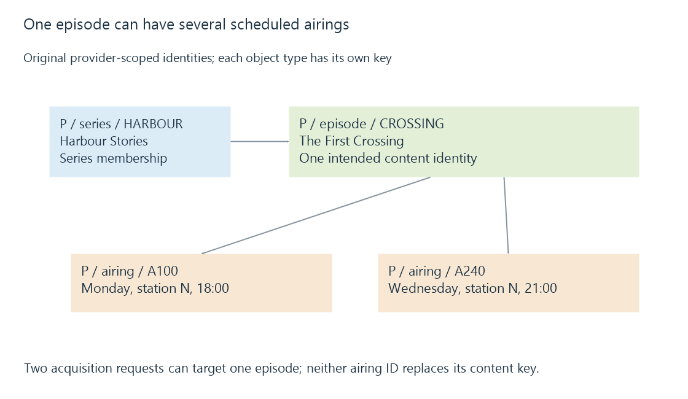

Programme identifiers: airings, episodes and series
Programme identifiers distinguish series, episodes and scheduled airings within a provider or broadcast context, enabling reliable joins without treating titles or local IDs as universal keys.
“Programme ID” can mean several different things. It may identify a scheduled airing, the episode being aired or a series containing that episode.
Those identities support different decisions. A timer needs an airing and time. A series rule needs series membership. Duplicate detection usually needs the content identity and an assessment of what was already captured.
One episode can have two airings
Use this original inventory:
| Object | Identity | Meaning |
|---|---|---|
| Series | P/series/HARBOUR | Harbour Stories |
| Episode | P/episode/CROSSING | The First Crossing |
| Monday airing | P/airing/A100 | That episode on station N at 18:00 |
| Wednesday repeat | P/airing/A240 | That episode on station N at 21:00 |
There are two airings but one episode. Recording both airings would produce two captures of the same intended content, although their edits, reception and completeness can differ.
Replacing the airing ID with the episode ID loses the ability to distinguish the two scheduled requests. Replacing the episode ID with the airing ID prevents a simple identity comparison from recognizing the repeat.

The namespace belongs in the key
Provider-local values can collide:
[
{"provider": "P", "kind": "episode", "id": "42", "title": "The First Crossing"},
{"provider": "Q", "kind": "episode", "id": "42", "title": "Harbour Storm"},
{"provider": "P", "kind": "airing", "id": "42", "title": "Coast Weather"}
]
The string 42 appears three times. Each complete (provider, kind, id) key describes a different object.
A server can translate supplied keys into internal IDs. That translation does not make equal raw IDs from unrelated providers interchangeable.
Provider identifiers develops the broader namespace principle. Television adds an explicit scheduled-airing dimension.
Broadcast event identity is another representation
DVB event IDs are allocated within service definitions; ATSC event IDs belong to their virtual-channel/EIT context. They describe broadcast events rather than automatically supplying a provider’s persistent episode identity.
The associated service/source and relevant table/time context matter. A display number is not a complete replacement for that context, and a reused event number should not be treated as a permanent global key.
Emby exposes programme and timer identities along with separate channel, series and provider-related properties. Use the identity appropriate to the decision rather than assuming every field containing “Id” has the same lifetime.
Episode coordinates need their numbering convention
XMLTV’s xmltv_ns convention uses zero-based season, episode and part coordinates. Thus 1.4. denotes season two, episode five, with part unspecified.
An onscreen label such as S02E05 is a different representation. A missing coordinate is unknown; it does not mean the first episode.
Even known season/episode coordinates require the intended series and order. Two series can each have a season-two episode-five, and alternative episode orders can use different coordinates for the same content.
Missing identity changes the confidence of the decision
A title can help a viewer find a programme, but identical titles occur across episodes, remakes and daily broadcasts. A changed title can also describe the same content.
When a trusted content ID is absent, matching may need several pieces of metadata and an explicit policy for uncertain results. False matches skip wanted recordings; failed matches capture repeats.
See Also
- Broadcast service identifiers
- Series recording rules and future airings
- Duplicate recording detection and episode identity
- Provider identifiers